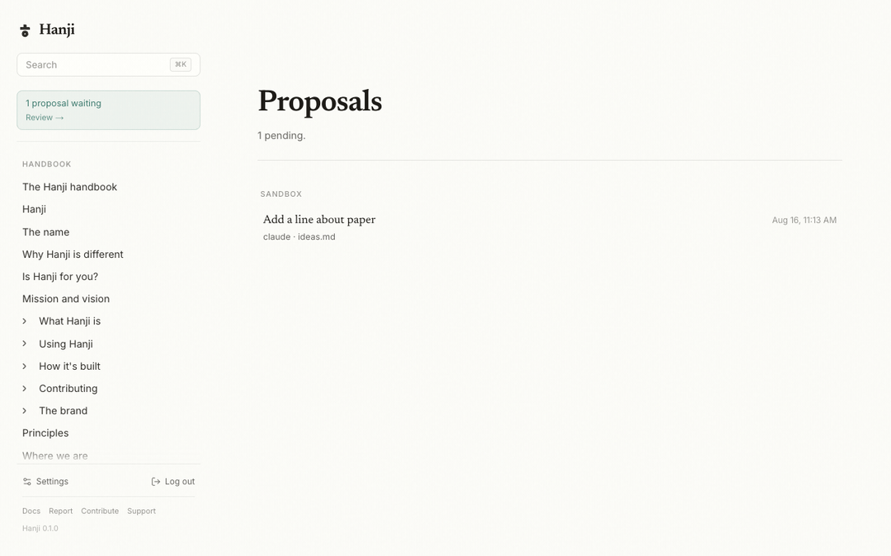

Proposals
This is the page where Hanji stops being a wiki and becomes the thing it was built to be. An agent never edits your pages in place. It proposes a change, the proposal lands in the front, and you decide. The whole loop runs over git, and you never have to see that.
The loop
- An agent with
read+proposescope callshanji_propose(see Agents). Behind the scenes that becomes ahanji/*branch carrying one commit with the agent's change: on a clone mount, pushed to the mount's remote; on a local mount, a branch of your own repository. - A card appears in the sidebar, under the search box: how many proposals are waiting, and Review. It exists only while something waits; at zero the sidebar stays pure content. The count is cheap to compute, and it refreshes whenever a mount is synced or a proposal is made, merged or rejected.
- Open the proposal. You get the title the agent gave it, who proposed it, which page it touches, its weight (+added/−removed), and a line diff: green for what it adds, red for what it removes. If the agent left a self-review note on the proposal, it sits beside the diff - the agent telling you where it is confident and where it is not, before you read a line. The queue itself reads like a triage view: each row carries the note, the diff's weight, and how long it has waited.
- Press Merge or Reject. That is the entire ceremony.
A proposal the conductor wrote shows as a card in its panel in Hanji Document, Hanji Plan and Hanji Think, linking to the review in Hanji Plan, where Apply and Discard live; a card from a teammate's conversation says whose it was.


People propose too
Agents are not the only ones held to review. Mount a repository with --suggest and the human front follows the same rule: the editor works exactly as everywhere else, but Update becomes Propose, and pressing it opens a branch instead of committing. The proposal lands in the same card, gets the same diff, and waits for the same Merge. One review ceremony for every writer, whatever species they are.
What Merge does
Merge lands the proposal on the page: a merge commit on the base branch, the proposal branch deleted, the page and the search index updated immediately. The agent's own commit survives in history with its name on it, so git blame a year from now still tells the truth about who wrote what.
On a clone mount the merge is pushed to the mount's remote. On a local mount the merge is a commit in your own repository, and the base branch moves forward in one of two ways. When the base is checked out in your folder, or in another worktree of yours, Hanji fast-forwards it there, which needs that worktree to hold no uncommitted edits to tracked files; with edits, Merge says "commit or stash your edits first" and nothing moves (an untracked file does not block). When the base is checked out nowhere (your folder on another branch, or at an older commit), Hanji moves the branch alone and leaves your files and your checked-out branch as they are; the page shows once you check the base out again. While you rebase or bisect the base, or when it moved during the merge, Merge says to press it again once the folder is settled, and nothing moves. A proposal that changes files outside the mount's folder (a branch made by hand, say) is not merged from Hanji, since Review shows the mount's part only. Nothing is pushed: push the merge as you push your own commits.
What Reject does
Reject deletes the branch, and keeps the record. Who refused what, and when, is written down; the proposal's tip commit survives under a kept ref, refs/hanji/rejected/<name>, in the clone or in your own repository on a local mount, so the agent's diff never silently ceases to exist (git branch hanji/<name> refs/hanji/rejected/<name> brings it back). On a local mount, a proposal you have checked out in a worktree is not rejected until you switch that worktree to another branch. The page itself never knew it was threatened, and rejections appear on the Activity page for the owner - a refusal is a decision, and decisions deserve a trace.
When the page moved underneath
If someone edited the page after the agent proposed, the two versions may no longer merge cleanly. Hanji checks before you do anything: the proposal opens with a warning and Merge is disabled. There is no conflict-resolution screen, on purpose. The honest move is to ask the agent to re-propose from the current page, or reject. A merge you have to untangle by hand defeats the point of reviewing calmly.
The honest notes
- The review surface is owner-only. Agents can propose all day; only you merge.
- A proposal is a branch of the mount's repository, nothing more: on a clone mount a branch of its remote, on a local mount a branch of your own. There is no separate proposal database to back up or migrate. Walk away and the proposals walk with the repo.
- On a local mount, a proposal is a branch of your own repository,
hanji/<title>-<hex>, made in a temporary worktree under the data folder: your checked-out branch, index and edits are not touched, nothing is fetched or pushed, and no pull request is opened. Thehanji/branch namespace is Hanji's: a branch of yours named that way is read as a proposal while its tip is not on the base. - One page per proposal in this version, which is exactly what
hanji_proposeproduces. - An agent can attach a self-review note to a proposal (what it is confident about, what it is not). The note rides the proposal's commit body and shows with the diff - read it before the diff, it usually tells you where to look.
Read Agents for minting the token that can propose, and Permissions for the scopes behind it.